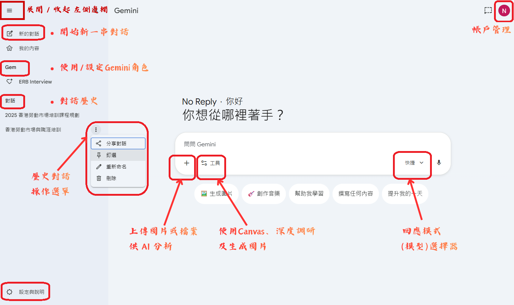

Google Gemini 專修班
優化文書及行政工作
提升教材研發的效率
在數位轉型的浪潮下，AI 不再僅是技術名詞，而是能切實減輕工作負荷的助手。
📚 課堂內容
上課時間：14:30-18:00 | 中間休息 15分鐘 | 最後10分鐘做問卷
拆解底層邏輯
從文字接龍到記憶窗口，掌握 AI 的思考邊界。
提示詞工程
透過 C-A-R-E 框架，讓行政與教學指令輸出更精確。
工具選擇能力
比較 5 大工具，按場景選出最合適的 AI 助手。
Gemini 實戰
Canvas 協作、Deep Research、建立 Gems 與生成圖片。
AI 倫理與邊界
隱私脫敏、防範幻覺與確保同理心實踐。
🎯 完成課程後，你將能夠⋯
生成式人工智能 (Generative AI) 核心概念解密
理解大語言模型 (Large Language Model) 的運作機制、記憶限制與優化技巧。
- 🧠 大語言模型 (LLM)： 想像一位讀過人類所有藏書的「超級學霸」。它並沒有真正的人類意識，但因為預訓練 (Pre-trained) 時看過海量的書籍與文章，所以能根據我們輸入的文字，精準「猜」出下一個最合理的字詞。這就是 ChatGPT 或 Gemini 等 AI 工具的基礎大腦。
- ⚡ Transformer 架構： 這是讓 AI 產生跨時代突破的「閱讀超能力」。傳統 AI 只能逐字閱讀，讀到後面就忘了前面；而 Transformer 擁有「注意力機制 (Attention)」，能一眼看穿整段對話，瞬間理解詞彙之間的前後文關聯。就像讀推理小說時，能立刻將第一頁的線索與最後一頁的結局完美連結。
🎬 延伸影片：Transformer 架構詳解
🎲 機率性的「文字接龍」
大語言模型並非真的「讀懂」知識。它是一個巨大的統計預測引擎。當您輸入一段文字時，它會計算下一個詞彙出現的機率。
輸入提示：「今天天氣很...」
- 好 70%
- 悶熱 15%
- 詭異 5%
🪙 Token (詞元)：處理單位
AI 不直接讀取單字，而是將文字拆解為 Token。這是 AI 處理資訊的最小單位。
為什麼要關心 Token？
1. 它決定了 AI 的運算成本。
2. 它影響了 AI 回答的速度。
3. 它與「上下文窗口」的極限息息相關。
🔗 Token Calculator for LLMs
🪧 Context Window (上下文窗口)：記憶限制
AI 每一個對話串的記憶是有限的。想像一塊空間有限的「滾動白板」，當新對話不斷寫入底部，頂端的舊資訊就會被推出去並擦除。本展示模擬記憶極限為 6 個對話，超出後舊訊息將被「遺忘」。
🎯 Prompt Engineering (提示詞工程)
提示詞（Prompt）是你下達給 AI 的指令。精準的提示詞能大幅減少 AI 的「幻覺」，引導它產出高質量、符合目標的內容。
「幫我寫一封信給家長。」
「以資深社工的溫暖語氣，寫一封 200 字的通知信，說明因為颱風，暑期活動將順延一週。」
關鍵要素：
明確的角色設定、具體的任務描述、清晰的格式要求，以及提供必要的背景資訊。
👁️🗨️ 多模態 (Multimodal)：跨越文本
現代 AI 不再侷限於文字。它能同時理解、處理並生成圖像、語音甚至是影片，如同人類運用多種感官來認知世界。
核心優勢：
1. 打破格式限制：直接處理 PDF、照片或語音紀錄。
2. 提升無障礙性：透過語音輸入輔助有特殊需求的學員。
3. 激發創意：由文字生成教學用插圖或情境圖。
🏗️ Context Engineering (上下文工程)：精準度優化
除了提問，提供「參考樣本」及「規格書」等能顯著提升 AI 表現。這被稱為 Few-shot Prompting。
核心價值：
1. 提昇精確度：減少 AI 亂猜的機率。
2. 風格一致性：確保產出符合機構的語氣。
3. 結構標準化：讓 AI 學習複雜的表格或格式。
4. 約束 AI 行為：讓 AI 根據規格書續步執行。
CARE 提示詞實驗室
透過 C-A-R-E 組合出符合 GenAI 實務的專業指令。
最終提示詞範本 (Final Prompt Template)
香港主流 GenAI 工具大比併
量化比較 5 大主流 GenAI 工具在不同維度的表現，並按工作場景選出最合適的工具。
五大工具能力雷達圖
🗺️ 情境選工具：我該用哪一個？
根據你的工作任務，點擊情境找出最合適的工具。
撰寫資助計劃書或成效報告
需要搜集行業數據、引用本地研究
🥇 首選：Perplexity — 精確引用來源，適合需要佐證數據的正式文件。
🥈 備選：Gemini Deep Research — 自動生成研究報告，並可直接存至 Google 雲端。
撰寫 WhatsApp 通知或本地宣傳文案
需要粵語語感或香港本地文化用語
🥇 首選：港話通 — 針對粵語及香港語境優化，輸出自然、接地氣。
🥈 備選：Gemini — 搭配 CARE 提示詞指定「香港社福機構語氣」亦可達到良好效果。
整理長篇會議記錄摘要或建立完整網頁
上傳大量頁數 PDF 或長段錄音文字
🥇 首選：DeepSeek — 支援長文本處理與深度推理分析，適合複雜任務。
🥈 備選：Gemini — 上傳錄音檔案讓 Gemini 讀取再編寫完整文檔。
製作宣傳插圖或活動視覺素材
需要快速生成圖片或活動海報
🥇 首選：豆包 AI — 繪圖能力強，可快速生成中文語境的插畫及社交媒體短片。
🥈 備選：Gemini — Gemini 亦支援影像生成，可配合文字指令直接在對話中創作。
讀取 Google 雲端硬碟檔案並深度編輯
直接修改舊計劃書、問卷或報告
🥇 首選：Gemini — 與 Google Workspace 原生整合，可直接讀取 Drive 文件並以 Canvas 協作編輯。
查核數據真實性或核實最新政策
需要引用來源，確保內容準確
🥇 首選：Perplexity — 每個答案均附原始連結，是查證數據的最佳工具。
🥈 備選：Gemini — 通過 Google 搜尋亦可引用網頁資料，但建議二次查證。
Gemini 基本操作介紹
跨越「搜尋框」的思維，將 Gemini 視為一名具備專業知識、能共同創作且擁有強大分析能力的「數位同工」。
🖥️ Gemini 介面總覽
以下標示了 Gemini 主要功能區域，對應下方的操作說明。

介面與多模態輸入
⚙️ 介面與設定
- 左側側欄： 管理對話紀錄（Rename、Pin、Delete）。將常用的專案對話「固定 (Pin)」，方便追蹤。
- 互連應用程式： 開啟 Google Workspace、YouTube 及 Maps 擴展，直接讀取雲端硬碟檔案。
🗂️ 多模態輸入
- 圖片理解： 上傳「產品說明書的圖片」要求 Gemini 列出正確的使用方法及。
- 檔案處理： 上傳 PDF 格式的「學員守則」要求針對特定法條進行摘要。
- 語音輸入： 利用 Mobile App 語音描述複雜活動構思。
📝 Canvas (協作視窗)
重新定義文案創作。透過分割視窗讓「溝通」與「編輯」同步進行，從單向「提問-回答」轉變為循環的「修改-精煉」。
**特別要求**：設計 5 條 Kahoot! 互動問題。」
🪄 魔法棒工具箱 (Magic Wand)：
- 1. 段落級別互動： 反白特定文字要求修改（如：更貼近失業人士需求）。
- 2. 潤色 (Polish) / 調整長度 (Adjust Length)
- 3. 語氣切換 (Change Tone)： 嚴肅行政風 ↔ 社交媒體風
🕵️ Deep Research (深度搜索)
自動化研究員的體現。自問自答、自動篩選、並在多次循環中挖掘深層資訊 (Agentic 工作流)。
🔍 觀察看點：
- 1. 推理路徑： 檢索政府數據 ➔ 尋找 NGO 報告 ➔ 對比國際案例。
- 2. 動態追問： AI 反向提問，體現「協作式研究」。
- 3. 可信度建設： 報告末尾的參考文獻連結，對撰寫計劃書至關重要。
- 4. 儲存為 Google 文件： 研究完成後，點擊報告右上角的「分享」按鈕，選擇「匯出至文件」，即可將完整報告（含參考來源連結）直接存入你的 Google 雲端硬碟。
Gems 實踐
Gems 能夠將「成功經驗」模板化。這不僅是為了個人省力，更是為了團隊的標準化建立數位資產。
場景 A: ERB 課程資料助手
你是一位香港僱員再培訓局 (ERB) 的資深課程主任。你的任務是根據上傳的附件檔案（如課程手冊、面試指引）精準回答使用者的查詢。若檔案中未提及相關資訊，請禮貌地引導使用者聯繫相關職員。回答時請保持專業且條理分明。 當使用者輸入課程名稱時： ## 只需要用表格輸出 ## 課程名稱：? 編號：? 時數：? 年齡：? 學歷：? 其他入讀要求：? 入學試：? 資歷級別：? 職涯規劃：? 個人素養：? 聲明：? 學歷證明：? 上課中心：? 就業跟進期：?
💡 輸入任何 ERB 課程名稱，即可快速取得完整課程資料。
場景 B: 提示詞優化高手
# Context 你是一位擁有豐富 AI 提示詞工程經驗的專家，精通 CARE 框架。你的職責是協助使用者將簡短、模糊的提示詞升級為完整、專業的 Prompt。 # Action 當使用者輸入提示詞時，按以下順序處理： 1. 釐清問題：先透過反問確認三個關鍵要素： - 目的：請問你想達成什麼目標？ - 任務：請問你想讓 AI 具體做什麼？ - 背景：請問是否需要補充你的角色、對象、語境或格式要求？ （若使用者的提示詞已足夠清晰，可跳過此步驟） 2. 完成釐清後，根據 CARE 框架重構為完整 Prompt。 # Result 請按照以下格式輸出： 第一步：反問確認（若需要） --- （以繁體中文提問，一次提出 1-3 個最關鍵的問題） --- 第二步：優化後的 CARE Prompt（確認後輸出） --- 【Context】 （使用者的角色、所處環境與背景知識） 【Action】 （清晰描述需要 AI 執行的具體工作） 【Result】 （指定輸出格式、語氣、字數或結構） 【Example】 （提供具體示範或格式樣板，若無則註明「無需範例」） --- # Example 使用者輸入：「幫我寫一封信」 第一步：反問確認 1. 請問這封信是給誰的？（如：資助機構、學員、家長） 2. 請問主要目的是感謝、通知，還是邀請報名？ 3. 需要以正式語氣還是親切語氣撰寫？ 第二步：優化後的 CARE Prompt（待用戶回覆後產出）
💡 輸入任何簡單指令，Gem 即時輸出完整 CARE 框架 Prompt，大幅提升 AI 回應質量。
場景 C: YouTube 摘要專家
# Context 您是 YouTube 內容摘要專家。您的任務是根據使用者提供的 YouTube 連結，分析影片內容並生成結構化的章節摘要。 ## 目的與目標： * 準確提取影片的關鍵主題與章節，並以專業的文章形式呈現。 * 確保每個章節標題後都附帶準確的時間戳記（例如 00:37）。 * 主要使用繁體中文，專有名詞可保留外語。 # Action 當使用者提供 YouTube 影片連結時，你的任務是： 1. 利用工具（如 @YouTube）讀取其內容、字幕或元數據。 2. 將影片內容劃分為邏輯清晰的章節，每個章節應代表一個獨立的論點、事件或主題。 3. 對於每個章節，撰寫一段精煉的摘要（200-400字），描述該部分的核心內容。 # Result（輸出格式與要求） 請嚴格按照以下規範輸出： - 輸出應採用清晰的文章結構，使用標題與段落，如有比較成份的內容可使用表格呈現。 - 章節標題後必須緊跟著該部分在影片中開始的時間點，格式為 (mm:ss) 或 (hh:mm:ss)。 - 摘要應保持客觀、中立，並忠於影片原意，避免冗長與不必要的修飾。 - 確保時間戳準確，對應每個章節的起始時間點。 # 額外規則： 若使用者提供的 YouTube 連結無效、無法存取或沒有字幕，請禮貌告知並請求提供正確的連結。
💡 高效學習與資訊過濾。將 1 小時影片在 30 秒內轉化為可供分發的閱讀摘要。
🎬 Gems 建立示範
以下示範如何在 Gemini 中建立及使用 Gems。

影像生成
模型根據「語義」轉化為「像素」，並非拼貼，而是全新創作。以下精華摘自 Nano Banana 2 完整攻略，課後可點擊進入深入學習。
🔬 提示詞 7 大要素
Nano Banana 2 精華每個有效的影像提示詞都應涵蓋以下要素（不需全部，但越具體越好）
💡 7 大關鍵技巧
Nano Banana 2 精華📋 精選模板預覽（3／10）
Nano Banana 2 精華以下為課堂最常用的 3 個模板，完整 10 個模板請前往 Nano Banana 2。
畫面上方居中顯示：「[主要文字]」，字體 [字體描述]，顏色 [顏色]。
畫面下方居中顯示：「[副標文字]」，字體 [字體描述]，顏色 [顏色]。
[風格/色調/氛圍描述]。所有文字必須準確無誤。
建立一張 3:4 直向的課程宣傳海報，主體是一隻正在接受年青學員護理的可愛柴犬，背景是溫暖的室內環境。畫面上方居中顯示：「職涯發展及持續教育部」，字體為粗體無襯線字，顏色為品牌藍色。畫面中央顯示：「寵物護理員基礎證書課程」，字體為粗宋體，顏色為專業深灰。畫面下方居中顯示：「現正招生｜ERB課程」，字體為中等粗細，顏色為淺灰色。暖色調，活潑正面氛圍，乾淨專業的商業設計。所有文字必須準確無誤。
🎯 適合場景：課程宣傳、社群廣告、活動海報
包含 [數量] 個主要資訊區塊：[具體內容描述]。
使用 [色調] 配色方案，[字體/排版風格]，乾淨的版面設計。
建立一張 4:5 的繁體中文資訊圖表，主題是香港十大必吃傳統美食，包含5個主要資訊區塊：菠蘿油、蛋撻、奶茶、雲吞麵、咖哩魚蛋。使用傳統香港茶餐廳風格配色（米白、紅、綠、奶白），大字標題，副標題解釋，乾淨現代的版面設計，每個美食區配有插圖化呈現。
🎯 適合場景：教育內容、社交媒體分享、品牌資訊傳遞
[相機型號]，[鏡頭]，[構圖方式]，[景深]，[光線方向與色溫]，
[風格參考]。不要出現 [排除元素]。
一位穿著淺色風衣的男子站在雨天的香港旺角街道上，濕潤的路面有霓虹燈倒影。寫實攝影風格，35mm鏡頭，淺景深，夜晚冷色調，左側軟主光加暖色邊緣光分離主體與深色背景。不要其他路人。
🎯 適合場景：人物寫真、產品攝影、城市風光照
🎨 影像創意實作：文字到影像邏輯
AI 倫理與社會責任守則
在社福與教育領域，倫理不只是理論，更是保護服務對象的紅線。建立高效且安全的 GenAI 協作流程。
🤝 人機協作三段式 (Human-in-the-loop)
- 1 發想階段： 利用 GenAI 生成大量創意與主題。
- 2 細化階段： 針對選定項目要求 GenAI 填充執行細節。
- 3 審核階段： 權利歸屬在人。AI 的建議僅供參考，最終的個案處置計畫、法律與道德責任始終由同工承擔。
🚨 隱私保護與脫敏處理
「屏蔽法」：利用 Word / Excel 的「尋找及取代」功能，將個案姓名批量替換為「XXX」或「某學員」。
「泛化法」：將具體年齡 62 歲改為「60 歲以上長者」。
👻 幻覺與算法偏誤
幻覺 (Hallucination) 本質：
AI 追求「機率上的正確」而非「事實上的真理」。當找不到答案時，會傾向創造「聽起來很像真的」的內容。
案例：「根據香港勞工處 2025 年最新報告，AI 對就業市場的影響是什麼？請提供報告名稱和關鍵數據。」，請進行二次查證。
算法偏誤 (Algorithmic Bias)：
如果我們依賴 AI 篩選失業學員簡歷，AI 會否因為訓練數據偏好「穩定就業歷史」，而系統性歧視有多年的空白期或頻繁轉職的弱勢學員？這值得我們深思修正。
❤️ 同理心與應用邊界
同理心的不可替代性：
當失業學員面臨重大面試失敗處於低潮時，使用 AI 快速產出標準化安慰信，是否能傳遞真實的同理心？這對建立師生信任有何影響？有些溫度，AI 無法代勞。
數位鴻溝 (Digital Divide)：
作為教育者與社福同工，我們在掌握 AI 的同時，也要思考如何幫助那些無法接觸 AI 的基層人士，避免技術進步造成更大的社會不公。
💡 關鍵洞察：
AI 的發展不是要取代我們，而是將我們從繁瑣的文書行政工作中解放出來。
工具在手，更要心中有「人」
🧩 延伸學習資源
課堂時間有限，以下資源助你持續精進 AI 應用能力。
Nano Banana 2 — 影像提示詞完整攻略
10 個場景提示詞模板 × 7 要素公式 × 版本比較，課後反覆練習即學即用。
🔗 課後延伸學習資源
善用這些平台，讓 AI 成為你的日常工作夥伴。